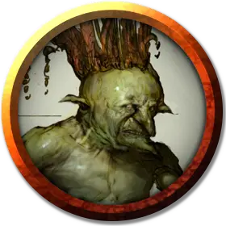

Мобар
Mobar
Маленький Гуманоид (Гоблин, Перевёртыш), нейтрально-злой, именной НИП

Класс Доспеха 13
Хиты 42 (7к6 + 18)
Скорость 30 футов, летая 30 футов (в гибридной форме летучей мыши), лазая 30 футов (в гибридной форме летучей мыши)
| мод | спас | ||
|---|---|---|---|
| СИЛ | 8 | −1 | −1 |
| ЛОВ | 17 | +3 | +3 |
| ТЕЛ | 10 | +0 | +0 |
| мод | спас | ||
|---|---|---|---|
| ИНТ | 10 | +0 | +0 |
| МДР | 12 | +1 | +1 |
| ХАР | 8 | −1 | −1 |
Навыки Восприятие +3, Скрытность +5
Иммунитет к урону дробящий, колющий, рубящий от немагических атак, кроме нанесённых посеребрённым оружием
Чувства тёмное зрение 60 футов, пассивное Восприятие 13
Языки Гоблинский
Опасность 2 (450 опыта)
Бонус мастерства +2
Особенности
Языки. Гоблинский, но не говорит в форме летучей мыши.
Меняющий форму. . Мобар может действием превратиться в гибрид летучей мыши и гуманоида Среднего размера или гигантскую летучую мышь Большого размера или же принять свой истинный облик гуманоида. Все её статистики кроме размера остаются одинаковыми во всех обликах. Всё носимое и несущее ей снаряжение не превращается. Она принимает свой истинный облик, если умирает.
Эхолокация (только в облике Летучей мыши или Гибрида). . Мобар имеет слепое зрение на расстоянии до 60 футов, пока не оглохнет.
Острый слух. . Мобар совершает с преимуществом проверки Мудрости (Восприятия), полагающиеся на слух.
Ловкий побег (Только в облике Гуманоида). Мобар может выполнить действия Засада и Отход бонусным действием на каждом своём ходу.
Чувствительность к солнечному свету. . Находясь на солнечном свете, Мобар совершает с помехой броски атаки и проверки Мудрости (Восприятие), полагающиеся на зрение.
Плохое зрение. Из-за плохого зрения Мобар совершает с помехой любой бросок атаки против цели, находящейся на расстоянии более 30 футов от него.
Действия
Мультиатака (только в Гибридной и Гуманоидной форме). В облике гуманоида летучая вермышь совершает две атаки скимитаром или две атаки коротким луком. В гибридной форме она может сделать одну атаку укусом и одну атаку скимитаром.
Укус (только в облике Летучей мыши или Гибрида). . Рукопашная атака оружием: +5 к попаданию, досягаемость 5 фт., одно существо. Попадание: 6 (1к6 + 3) колющий урон, и летучая мышь получает временные хиты, равные нанесенному урону. Если цель — гуманоид, она должна преуспеть в спасброске Телосложения Сл 10, или будет проклята ликантропией летучей вермыши.
Скимитар (только в Гибридной и Гуманоидной форме). . Рукопашная атака оружием: +5 к попаданию, досягаемость 5 фт., одна цель. Попадание: 6 (1к6 + 3) рубящий урон.
Короткий лук (только в Гибридной и Гуманоидной форме). . Дальнобойная атака оружием: +5 к попаданию, дистанция 80/320 фт., одна цель. Попадание: 6 (1к6 + 3) колющий урон.
Описание
Слабоосвещенная большая пещера предназначена для главаря вермышей, особо зловещего гоблина Мобара. Он предпочитает оставаться в гибридном облике - в нём он выглядит наиболее ужасно. Во всех трех своих обликах седовласый Мобар слеп на левый глаз из-за катаракты.
Мобар сражен красотой Ивы и следует ее указаниям без лишних вопросов. Он проводит своё время придумывая для неё подарки и затем, в облике летучей мыши, оставляет их перед башней. По уши влюбленный дуралей во всём остальном лишен сострадания и правит племенем оборотней с железной решимостью. Как правило, он не ведет переговоров с авантюристами; скорее он их ограбит и выпьет кровь.